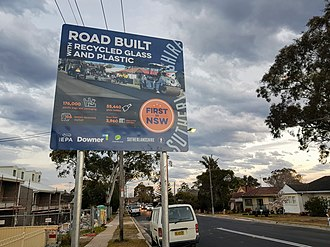
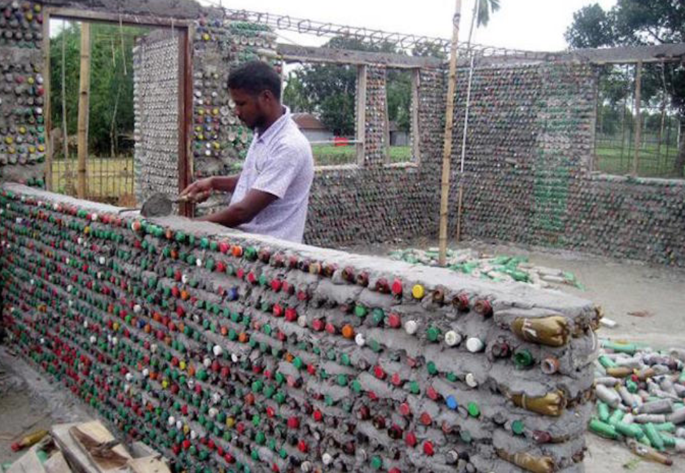
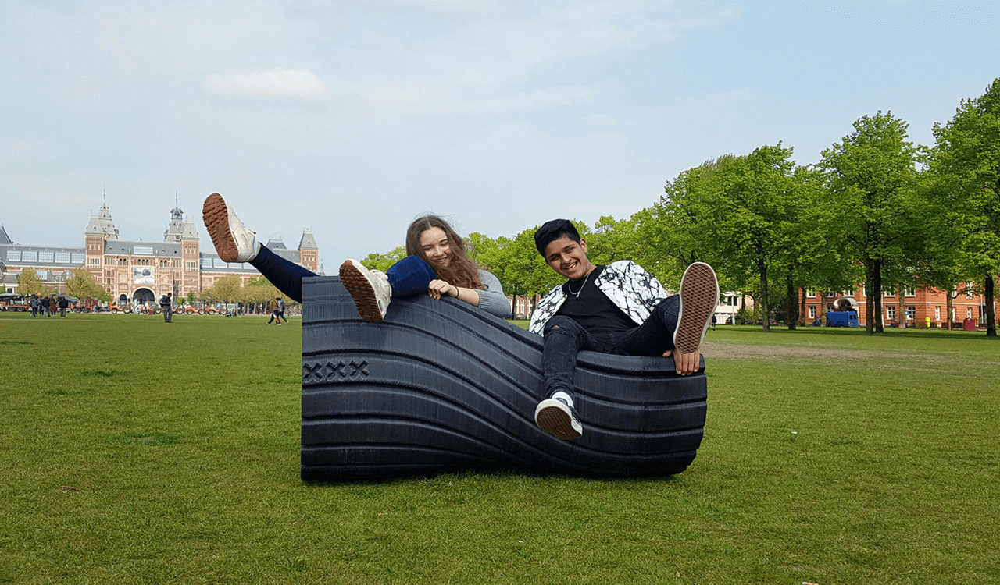
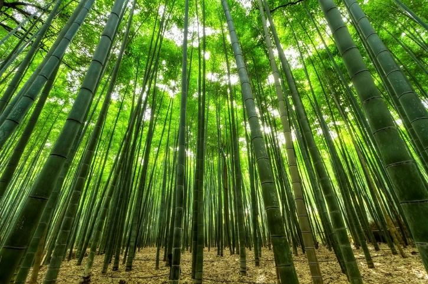
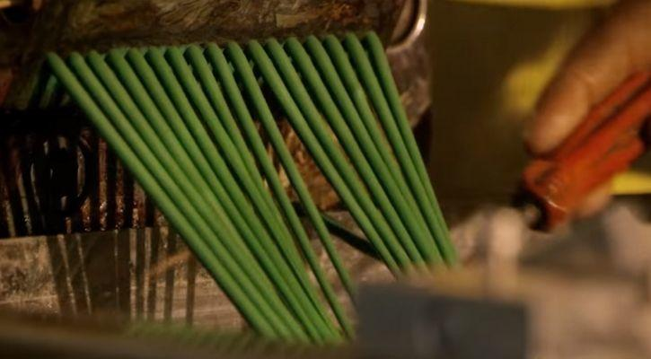
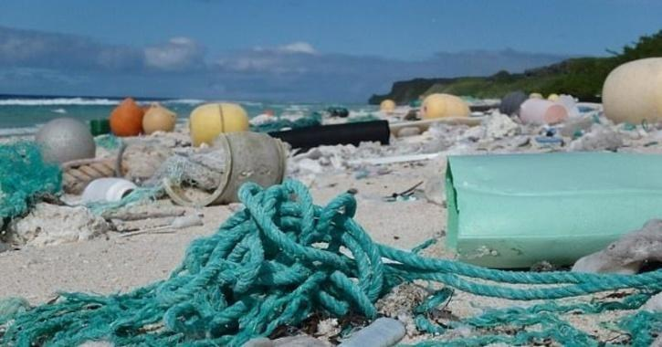
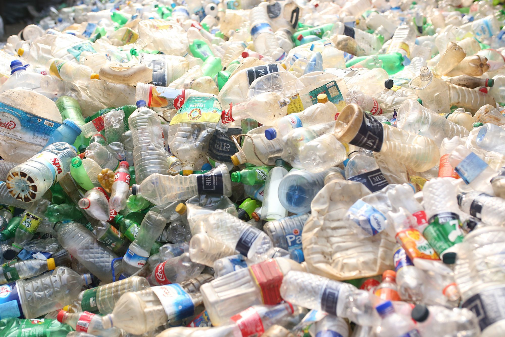
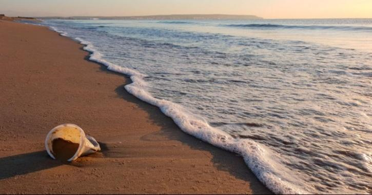
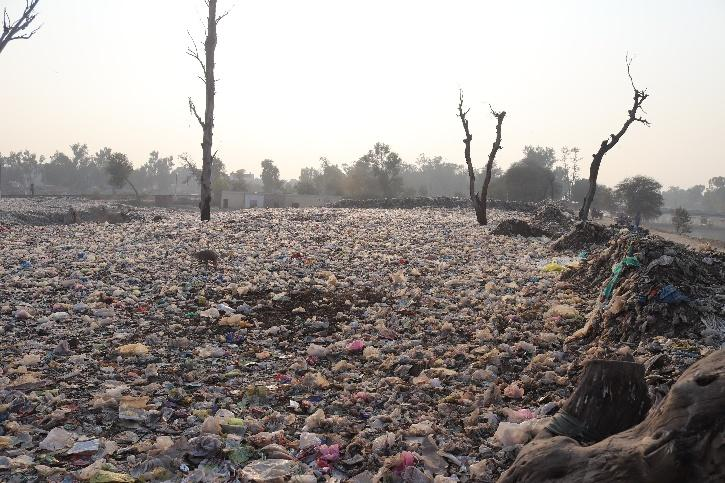

-
1. Plastics Roads
Plastic roads are made entirely of plastic or of composites of plastic
with other materials. Plastic roads are different from standard roads in the respect that standard roads are
made from asphalt concrete, which consists of mineral aggregates and asphalt.
Inspired by a trip to India where he saw litter pickers collecting plastic and then melting
it down to fill potholes, Toby McCartney returned to the UK inspired. Firstly, he tried to
do the same on his own road but not greeted with the best reaction he set out to find a way to utilise
plastics in road construction in a safe way instead.
Plastic roads consist of an asphalt mix with plastic waste incorporated into the asphalt
mixture. The implementation of plastics in roads also opens a new option for recycling post consumer
plastics.

First recycled glass and plastic road in New South Wales, Australia at suburb Engadine
-
2. Eco-Bricks
An empty plastic bottles are filled with clean, dried and single use plastics, stuffed inside to the brink
without any space in between! This makes them enormously resistant and like an eco-brick,
which can then serve
as reusable building blocks for a number of purposes like building tables, beds, stages or even walls. In
South Africa even a school was built from Ecobricks.
Eco-bricking has turned into a global movement. Not only does it allow people to visually
see how much
single-use plastic they are using every day but it locks away the plastics and prevents them from entering the
ecosystem.
These eco-bricks can then be put to us as bricks. Used to build structures from chairs to full houses! They
are a cheap and strong material to build with and because plastic lasts virtually forever they can withstand
many years in extreme weather conditions such as heat or rain.

Wall made of Eco-bricks
-
3. 3D Printing Street Furniture
3D printing is a growing technology. It allows anyone (well anyone who owns a 3D printer) to download the
plans for an item and see it printed in 3D plastic right in front of their eyes.
A group of students at UC Berkley have managed to find a way to use old single use plastic materials, melt
them back down and then use the to produce useful items, rather than just letting them reach landfill.
This was taken to another level by the ‘New Raw Association’ who used the same process on a large scale to 3D
print street furniture out of waste plastics. It takes 100kg of plastic waste to create just one of the street
benches, but when we are talking about finding a solution to this waste stream, the more plastic it takes the
better.

-
4. Novoloop (BioCellection)
Inspired by joining a recycling club back in high school, Miranda Wang set her sights on solving the problem
of plastic waste. She and co-founder Jeanny Yao set up a company called biocellection which aims to find a way
of breaking down plastics.
They started from the view point that although plastics don’t look organic or natural, they are still made
from carbon atoms. This means that there must be a way to break them back down into organic matter once again
and return them to the earth or use them in new products.
The team found that there were certain bacteria that could do this, although it would take too long to make it
a viable solution. So to speed up the process they took this theory and applied it to a chemical process to
break down the plastics much faster.
Once the plastics are broken down, the end product can be utilised in many useful products.
BioCellection is now known as Novoloop. The following paragraph is about Oistre™, an innovative plastic
alternative.
Oistre™ is a performance plastic that fights climate change and plastic pollution. It
combines everything you
want in a high-performance material and is environmentally friendly.
Made with up to 50% recycled plastic harvested from our ATOD™ technology , and up to
45% lower CO₂e¹ footprint,
this polyester-based thermoplastic polyurethane (TPU) is a sustainable option for applications in
footwear,
fashion and apparel, consumer electronics, automotive, and additive manufacturing.
-
5. Genetic engineering of natural products

Single-use plastics, such as polythene bags and straws, are meant to be thrown out immediately after use. At
least in cities, they are only given out upon request to discourage its use. But the problem is deep-rooted
and requires alternatives to cater to this consumption economy.
Genetic engineering is helping many natural fibers, such as hemp, flax and jute
to acquire properties that can
expand their use from being used as fabrics, textiles, and currency to become better substitutes for plastics.
Innovations with flax include Flaxstic -- a combination of flax straw waste, plant-based
biopolymers and
recycled materials -- and ‘jute soy’ made from jute fiber cellulose and soy resin protein.
-
6. Chemical Recycling

If the first-best solution to fighting this plastic pandemic is finding natural substitutes, the second step
involves making plastics biodegradable and to achieve it in a sustainable and economic way at scale.
Mechanical recycling involves sorting, melting and remoulding plastics into lower-grade plastic products. But
this process is limited in nature as the performance properties of plastics degrade with every recycle.
Chemical recycling breaks the plastic down at a molecular level, therefore, allowing the plastics to be
recycled into useful materials. Some plastics, such as polyolefins -- the material in a polythene bag -- are
burnt at high temperatures using a thermal degradation process called ‘Pyrolysis’ to
typically produce fuels
and waxes.
-
7. Using nano-cellulose for biodegradation

Over 500 billion polyethylene terephthalate (PET) bottles are consumed globally every year,
and much of it
ends as waste in landfills. Green Science , a Japanese research group striving to
innovate bioplastic,
has produced a bottle made completely out of a biobased composite material called
nanocellulose.
This is derived from natural biomass resources such as trees and plants and is inexpensive, recyclable and
biodegradable. It also has the potential to be used in several areas, including paper, packaging, coating,
medical and pharmaceutical applications. Transparent nanocellulose paper can revolutionise the
electronics
industry since its cost-efficient, light-weight, biodegradable, recyclable and possesses desired
optical
properties.
-
8. Bio-based biodegradable polymers

Polylactide (PLA) is a biodegradable polymer produced from lactic acid
derived from sugar beets, sugar cane and corn. It’s commonly used in packaging industries, textiles,
electronics, 3D printing and biomedical applications, thanks to its durability and low toxicity.
A company based in the Netherlands has successfully made PLA bioplastic resins from second generation
feedstocks to relieve pressure from food crops. However, their production costs are high, ranging from $2.6 to
$5.5 per kilogram, and thus requires government support during its infancy.
-
9. Using satellites to observe ocean plastics

Ocean Cleanup, a non-profit organization, is designing and developing
cleanup systems
to clean up what is already polluting our oceans and to intercept plastic on its way to the ocean via rivers.
The company is using satellite imaging and machine learning to help clean up and capture the 5 trillion pieces
of plastic trash they have observed in the world’s "ocean garbage patches”.
They estimate that within 5 years they could collect 50% of the 1.8 trillion plastic pieces floating in the
“Great Pacific Garbage Patch (GPGP) -- the largest accumulation of ocean plastic in the
world.
-
10. Blockchain-based reward system

The Plastic Bank, a grassroots organisation, offers Blockchain secured digital tokens for the
exchange of recycled plastics. They aim to revolutionise the world’s recycling systems to create a
regenerative, inclusive, and circular plastic economy by setting up recycling systems in economically
disadvantaged parts of the world. The company uses a security-rich, scalable reward system—a blockchain
banking platform—runs on the IBM Cloud and promises to transform anyone with a phone into a recycling
opportunity.